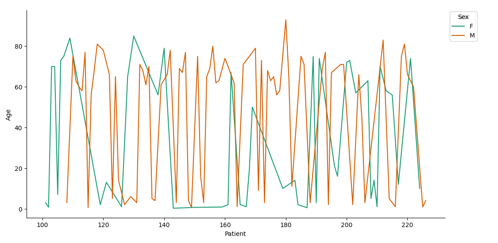

Major Lung Sound Features
Lung Sound Features Distribution
This bar graph visualizes the distribution of lung sound features across various respiratory conditions, including COPD, Healthy, Pneumonia, Asthma, Bronchiolitis, and LRTI. Each condition is represented by a color-coded bar indicating the percentage presence of specific lung sound features, enabling clear differentiation among conditions. This breakdown provides insight into the prevalence and patterns of key acoustic indicators across diverse respiratory health states, supporting more nuanced feature analysis and aiding in diagnostic classification.
Gender Distribution
This pie chart presents the gender distribution of lung cancer cases, indicating that 63.5% of cases occur in males, while 36.8% occur in females. This distribution underscores a significant disparity in lung cancer prevalence by gender, potentially pointing to differences in risk factors, exposure levels, or biological susceptibility. This information may inform gender-specific strategies for lung cancer prevention, screening, and intervention efforts.
Accuracy Over Epochs
This graph represents the correlation between training epochs and model accuracy, demonstrating how model performance progressively improves with each epoch as it optimizes based on the training data. The trend indicates the model's ability to generalize and learn, showing a gradual increase in accuracy with continued training, which reflects effective parameter tuning and convergence over time.
Graph Representation of Data
This graph illustrates the distribution of lung cancer incidence across age groups, showing the relationship between age and the number of diagnosed cases. The trend suggests an upward trajectory in incidence with increasing age, which may reflect cumulative exposure to risk factors and age-related vulnerability to lung cancer. This pattern provides insights into age-specific risk, underscoring the importance of targeted prevention and early detection strategies within older demographics.
This heatmap visualizes the correlation matrix for key lung sound features, including onset time, cessation time, presence of crackles, and presence of wheezes. The color-coded intensities highlight the strength and direction of relationships between these features, providing insights into how specific sound characteristics may co-occur or independently vary within lung health assessments. Identifying these correlations can support further analysis of distinctive sound patterns associated with various respiratory conditions, aiding in more precise diagnostic modeling.
This graph displays the progression of training and validation accuracy across epochs, providing insight into the model's learning curve and generalization capability. The trend in training accuracy reflects the model's increasing proficiency with the training dataset, while validation accuracy offers a measure of its performance on unseen data. Comparing these metrics over time enables evaluation of model overfitting or underfitting, guiding adjustments to improve predictive accuracy and robustness.
Additional Image 2 Description
Additional Image 3 Description
Additional Image 4 Description

Additional Image 5 Description

Additional Image 6 Description

Additional Image 7 Description